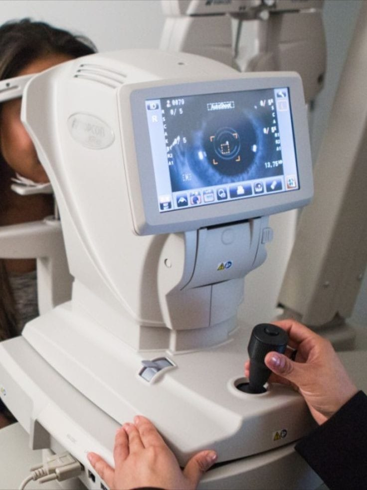
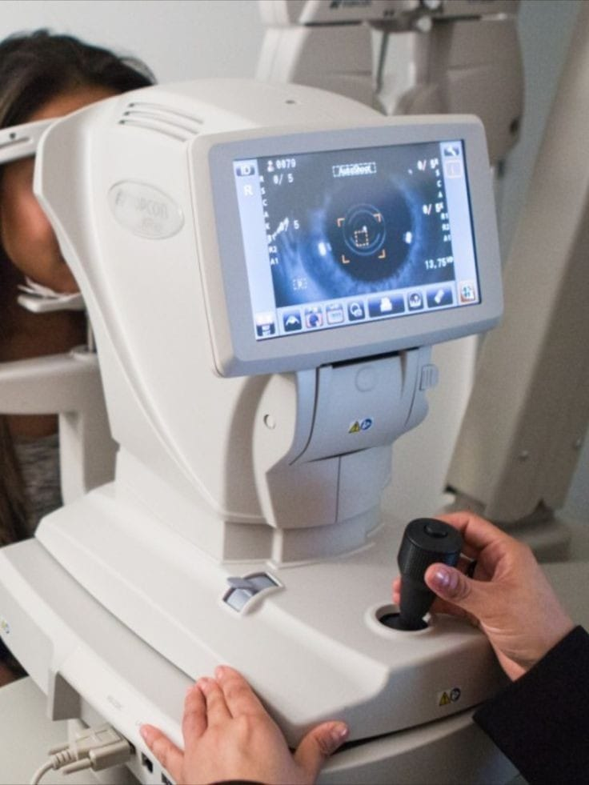

Ophthalmology is the branch of medicine focused on the diagnosis, treatment, and prevention of eye diseases and vision disorders. Ophthalmologists perform surgeries, prescribe glasses or contact lenses, and manage conditions like cataracts, glaucoma, and macular degeneration.
Our experienced team of Opthalmology specialists are dedicated to providing personalized care to every patient.
 
